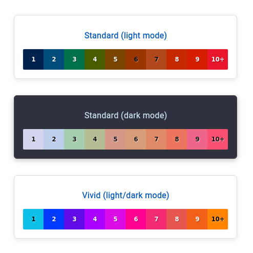

DharmaNexus
DharmaNexus
DharmaNexus is a multilingual text database for Classical Asian languages that serves as the foundation for the Dharmamitra platform. It hosts our ever-growing collection of texts in Pāli, Sanskrit, Chinese, and Tibetan and is tightly integrated with MITRA Search and MITRA Deep Research. It provides advanced fuzzy, semantic, and cross-lingual search capabilities, and is one of the few databases that provide search capabilities over large Sanskrit collections.
In addition to its role as a database, DharmaNexus offers a web platform for exploring intertextuality between these texts, in monolingual as well as multilingual settings. This feature, along with its technical foundation, is a continuation of the BuddhaNexus project. It employs modernized algorithms that combine multilingual matching with deep semantic similarity from Gemma 2 MITRA-E.
Getting Started
DharmaNexus offers a simple and intuitive way to explore vast collections of Buddhist texts in Pāli, Sanskrit, Chinese, and Tibetan.
- Choose your language: Start by selecting your preferred language from the main interface.
-
Select a text: Browse the available menu to quickly find a text of interest. Whether you know exactly what you're looking for or just want to explore, DharmaNexus makes navigation easy. You can browse the collections with their individual categories to get to a text, or you can type in the name of the text or the catalog number you are looking for to jump in directly. For full text and semantic search, you can of course use MITRA Search to jump directly to a passage that you are interested in.
-
Read and navigate: The platform opens your chosen text in a clean reading view. You can:
- Scroll through the content
- Jump to specific sections using standard numbering systems (e.g., SuttaCentral or Taishō numbers, or Derge folio numbers)
- Switch between texts via the 'change text' option that opens the main menu again
- Customize your view:
- Read in the original script or in transliteration
How Intertextuality Exploration Works
DharmaNexus helps you find intertextual connections within and between texts in Pāli, Sanskrit, Chinese, and Tibetan.
1. See the matches: While reading, you can choose to reveal intertextual connections by toggling the Show Matches switch. When enabled, DharmaNexus highlights passages in your text that have similarities in other texts in the database.
The highlighting is color-coded to create a "heat map" that shows the density of intertextual connections at any given point in the text. The colors, from cool to hot, indicate the number of matches found for a particular segment, with the number inside the highlight showing the exact count. A "1" means one match is present, a "2" indicates two matches, and so on. This gives you a quick visual guide to the 'thickness' of intertextuality throughout the text.

- After clicking on such a highlighted text passage, the matches with other texts are then shown in a new column. Hovering over a parallel will highlight the corresponding segment in the source text.
- Clicking on a specific parallel will open that text in a third column, allowing you to compare the two texts side-by-side.
2. Filter your results: You can narrow down the matches with filters:
- Similarity Score: This controls how similar a passage must be to be considered a match. A score of 100 indicates a perfect, verbatim match, while a lower score allows for more variation, showing passages that are semantically similar but not identical.
- Match Length: Sets the minimum number of characters for a parallel. You might use a shorter length when looking for verse parallels and a longer one for prose to ensure the matches are significant.
- Limit or Exclude: Focus your search by including or excluding specific collections or texts. For example, you could exclude all commentaries to see only parallels within the canonical texts.
3. Choose your view: DharmaNexus provides different ways to see the results:
- Text View: The default view, showing your text with highlighted matches.
- Table View: A sortable table of all matches, which can be downloaded as a spreadsheet.
- Graph View: Visualizes the distribution of matches for your selected text via a histogram. This chart shows which other texts or collections contain the most parallels, helping you quickly identify the most relevant connections at a glance.
- Numbers View: Uses standard numbering systems to locate matches in Pāli and Chinese texts.
For Buddhanexus Users
If you are coming from the predecessor application BuddhaNexus, you will notice a few key differences: * In its default setting, DharmaNexus has match highlighting turned off, and you need to flip the switch to on in order to see them. * DharmaNexus uses a more reading-friendly default color scheme, which is different from the color scheme of BuddhaNexus. You can restore the color scheme of BuddhaNexus by setting it in the sidebar menu to "vivid". * Unlike BuddhaNexus, DharmaNexus has no own search engine, but relies on MITRA Search, which makes precise and semantic search across the entire DharmaNexus datasets possible. * Currently, DharmaNexus does not feature the X section of the CBETA canon. This will be added in a future release. On the Tibetan side, we will add material of the rin chen gter mdzod, rNying ma rgyud ’bum, rNying ma bka’ ma, and much more over the coming months.
Underlying Data
Pāli
The Pāli textual corpus in DharmaNexus is drawn from several high-quality digital editions:
- The core canonical texts (Sutta, Vinaya, and Abhidhamma) are sourced from SuttaCentral's segmented texts from their bilara-data repository. This allows for precise linking to SuttaCentral.
- The commentarial literature (Aṭṭhakathā, Ṭīkā, and Anya) is from the Chaṭṭha Saṅgāyana edition published by the Vipassana Research Institute (VRI).
The complete Pāli data can be found on GitHub.
Sanskrit
The Sanskrit corpus is extensive and has been gathered from multiple academic projects:
- Göttingen Register of Electronic Texts in Indian Languages (GRETIL)
- Digital Sanskrit Buddhist Canon (DSBC)
- Muktabodha Indological Research Institute
- SuttaCentral
The complete Sanskrit data can be found on GitHub.
We also do our own independent data collection efforts within the Dharmamitra project. The Sanskrit collection is therefore growing constantly.
We are currently working intensely on a metadata catalog that gives detailes source attribution for each individual text, and this will be added in late summer/early autumn 2025.
Chinese
The Chinese textual corpus was obtained from the Chinese Buddhist Electronic Text Association (CBETA).
The complete Chinese data can be found on GitHub.
Tibetan
The Tibetan textual corpora are obtained from various sources, including the Asian Classics Input Projects (ACIP) for the Tibetan Buddhist Canon, and the Tsadra Foundation's Dharma Cloud.
In close collaboration with the Tsadra Foundation, major collections such as the rin chen gter mdzod, rNying ma rgyud ’bum, and rNying ma bka’ ma will be added over time.
The complete Tibetan data can be found on GitHub.
Technical Background
DharmaNexus uses the ByT5-Sanskrit model for word segmentation of Sanskrit texts from various text collections (See Sanskrit data description), which are then indexed on MITRA Search, which has access to all the data available in DharmaNexus. For Tibetan, a special substitution-based stemmer based on the foundational work of Paul Hackett's Tibetan Verb Lexicon is used. Pāli uses a slightly adapted version of the ByT5-Sanskrit model for word segmentation. For Chinese, we use the standard analyzers provided by Elasticsearch. In addition to token-based search, DharmaNexus is also searchable in MITRA Search via deep semantic embeddings on sentence and paragraph level.
FAQ
For frequently asked questions about DharmaNexus, see the DharmaNexus section in our main FAQ document.